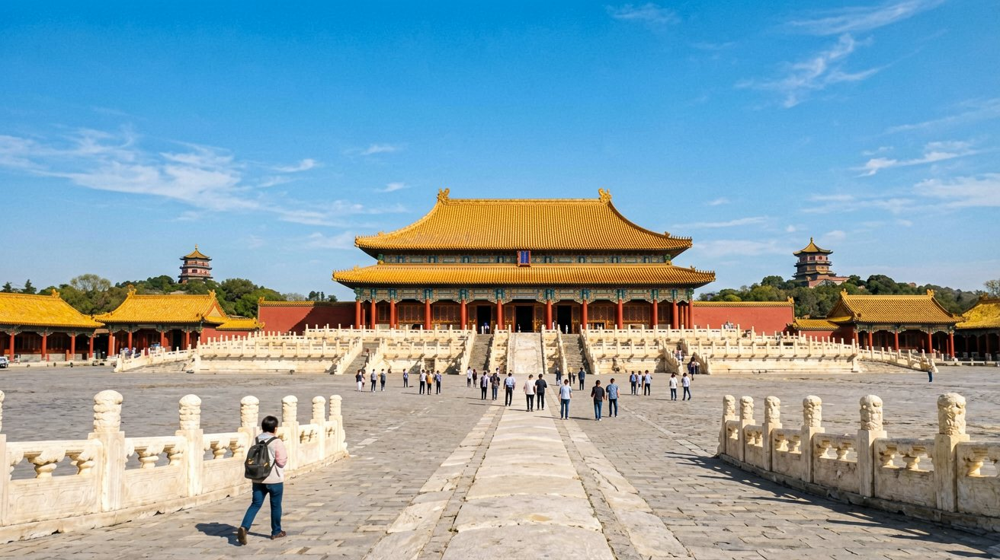
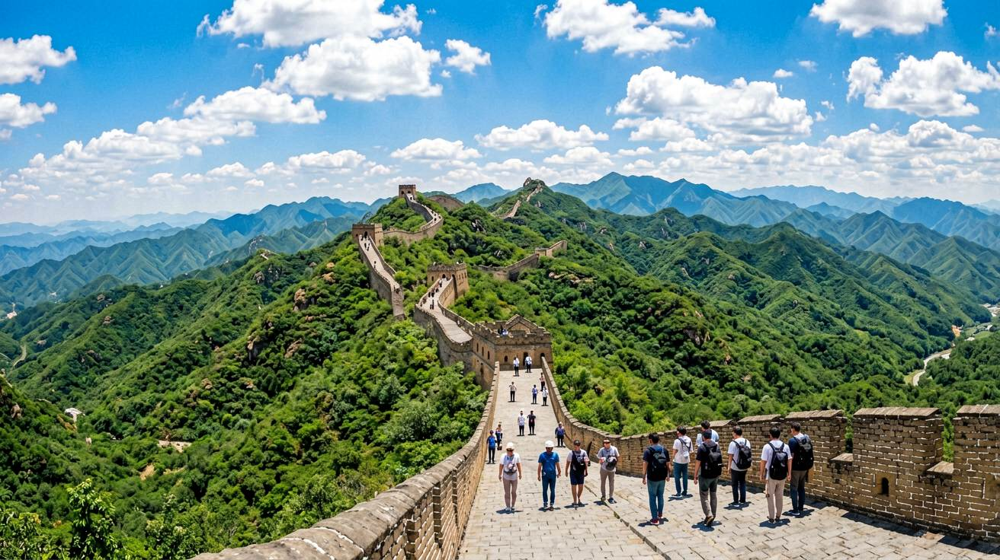
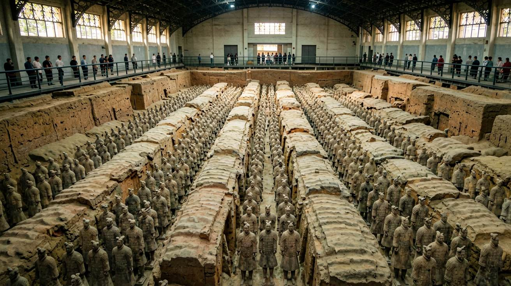
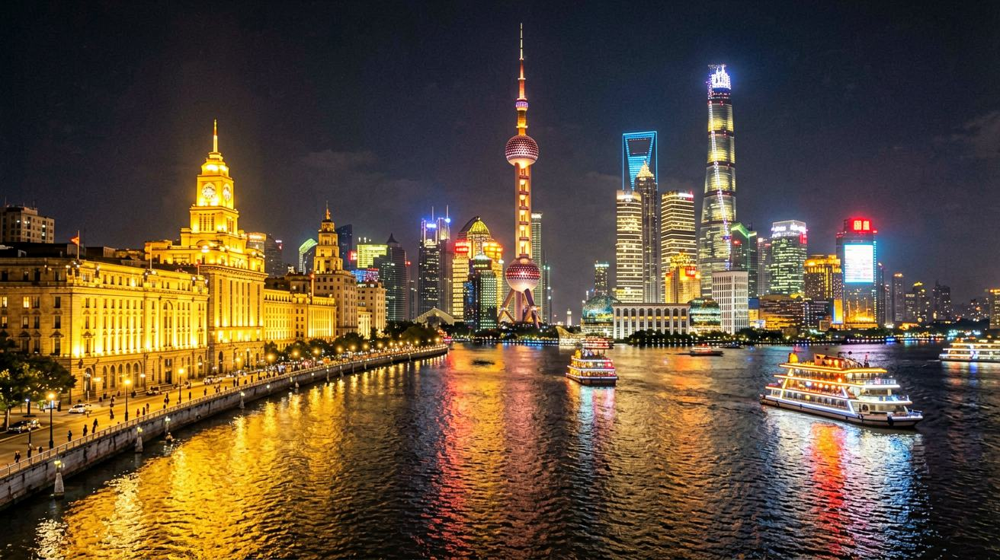

Last updated: June 2026.
Seven days in China. It is not enough time to see everything — but it is enough time to see the essentials and leave wanting more. This itinerary takes you through the three cities that form the backbone of any first trip: Beijing for imperial history, Xi'an for ancient civilisation, and Shanghai for modern China. Each city connects by high-speed train, and the daily schedules are deliberately paced so you are moving, experiencing, and absorbing — never rushing.

Land in Beijing and head straight into the city centre. On your first day, tackle the Forbidden City in the morning. Book your ticket online at least 3 days in advance through the official Palace Museum website — tickets sell out and there is no on-site purchase for foreign passport holders. After exiting through the north gate, walk up Jingshan Park for the view over the entire palace complex. This takes about 20 minutes and costs 2 RMB.
For lunch, walk east from Jingshan into the hutong neighbourhood around Nanluoguxiang and find a small noodle shop — zhajiangmian (noodles with fried bean sauce) is the classic Beijing lunch. In the afternoon, walk through the Temple of Heaven park. Go in the late afternoon when the light is warm and local residents gather to play cards, sing, and exercise — the park is as much a living cultural experience as a historical site.
Day two is for the Great Wall. Choose Mutianyu over Badaling — it has fewer crowds, better-restored sections, and a toboggan ride down the mountain that is genuinely fun. Book a private car through your hotel or Trip.com for about 600 to 800 RMB round-trip. Leave at 7:00 AM to arrive before the crowds. Spend about 3 hours walking the wall, then return to Beijing by mid-afternoon. In the evening, eat Peking duck at a restaurant in the Dongcheng district — Siji Minfu and Da Dong are both excellent. Book a table ahead.

On the morning of day three, take a high-speed train from Beijing West Station to Xi'an North Station. The journey takes about 4.5 hours. Book your ticket on Trip.com using your passport number — second class seats cost roughly 550 RMB. Arrive just after lunch and check into a hotel inside the city walls, near the Bell Tower.
Spend your first afternoon walking the Xi'an City Wall. The 14-kilometre loop is intact and walkable, but renting a bicycle at the top is better — it takes about 90 minutes to cycle the full circuit, and the view of the old city on one side and the modern skyline on the other is a study in contrasts. As the sun sets, head to the Muslim Quarter for dinner. The narrow streets are packed with food stalls selling lamb skewers, roujiamo (Xi'an-style meat sandwich), and hand-pulled biangbiang noodles. Point at what looks good and pay with your phone.
Day four is for the Terracotta Warriors. The site is 40 km east of Xi'an city centre. Take Metro Line 9 to Huaqing Pool station, then a direct bus to the museum — total travel time about 90 minutes. The museum has three pits. Start with Pit One, the largest and most dramatic, where thousands of life-sized soldiers stand in formation. Pits Two and Three are smaller but show different types of figures. There is no need for a tour guide — rent the English audio guide at the entrance for about 40 RMB. Return to Xi'an by mid-afternoon. If you have energy left, visit the Big Wild Goose Pagoda at dusk, then find dinner in the South Gate area.

On day five, take the morning high-speed train from Xi'an North to Shanghai Hongqiao Station. This is the longest leg — about 6 hours — so bring snacks, a book, and a fully charged power bank. Second class costs roughly 670 RMB. Arrive in the afternoon and check into accommodation near the former French Concession.
Spend the evening walking the Bund. Start at the north end near the Waibaidu Bridge and walk south. On your left, the colonial-era buildings glow under warm lights. Across the Huangpu River, Pudong's skyline — the Oriental Pearl Tower, Shanghai Tower, and the Jin Mao building — lights up in a constant shifting display. The contrast between the 1920s bank buildings and the 21st-century towers is the entire story of Shanghai in one view. Walk all the way to the ferry terminal and take the 2 RMB passenger ferry across the river for a different angle.
Day six is for neighbourhood walking. Start in the French Concession — plane-tree-lined streets, 1930s lane houses, independent coffee shops, and small design stores. Walk from Wukang Road to Anfu Road to Wulumuqi Road, stopping wherever interests you. For lunch, eat xiaolongbao (soup dumplings) at a local shop — Jia Jia Tang Bao and Fu Chun are both excellent. In the afternoon, visit the Shanghai Museum at People's Square (free, book ahead) or explore the art galleries in the M50 creative district. In the evening, find a rooftop bar near the Bund for a farewell drink with the Pudong skyline as your backdrop.
Day seven is a flexible day before departure. If your flight is in the evening, spend the morning at Yu Garden, a classical Ming Dynasty garden in the old city, then browse the neighbouring bazaar for last-minute souvenirs. If you want one more local experience, find a wet market in a residential neighbourhood and walk through — the piles of unfamiliar vegetables, fresh noodles, and live seafood are a window into daily Chinese life that no tourist site can offer.

High-speed trains connect all three cities on this itinerary. Book all your train tickets on Trip.com as soon as your dates are confirmed — tickets go on sale 15 days before departure and popular morning trains sell out quickly. You will need your passport number for booking and your physical passport to board. At the station, passport holders go through a manual check lane — look for the staffed counter rather than the automated gates.
Total train costs for this route: approximately 1,300 to 1,500 RMB for three second-class legs. Upgrade to first class for more legroom and a quieter car at roughly 50% more per ticket.
A rough budget for the week, excluding international flights: accommodation 350 to 800 RMB per night (mid-range), meals 100 to 250 RMB per day, transport within cities 30 to 80 RMB per day, attraction tickets 50 to 150 RMB per site, and inter-city trains as above. A comfortable trip runs 7,000 to 12,000 RMB per person for the full week.
This seven-day route covers the three cities at the heart of the classic China travel circuit, but there is much more to see beyond this itinerary. If you are still planning your journey, start with our guides on visas and arrival, choosing accommodation, and getting around Chinese cities. High-speed train tickets, Palace Museum entry, and popular hotels fill up weeks ahead during peak travel seasons — plan early and book everything as soon as your dates are confirmed.
This itinerary is based on verified route and schedule data as of June 2026.
Sources
Prices and schedules may vary by season. Confirm specific timings and fees before your trip.